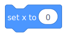
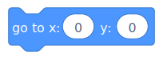
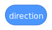

This is the change x block. If you have studied coordinate planes, then you know what the x coordinate is. If you don't, then let me teach you. The x coordinate is just the left and right position of a point or object. This block would change the x by how much numbers is inside of the circle. The Circle is a input variable which can have any variable inside of it. Positive numbers mean right, and negative numbers mean left.
This is the change y block. If you have studied coordinate planes, then you know what the y coordinate is. If you don't, then let me teach you. The x coordinate is just the up and down position of a point or object. This block would change the y by how much numbers is inside of the circle. The Circle is a input variable which can have any variable inside of it. Positive numbers mean up, and negative numbers mean down.
 This is the set x blocks. If you don't know about coordinate planes, review the explanations above in the change coordinates. The set x block directly teleports the sprite directly to a specific X coordinate position. The circle is an input variable, which means you can have any variable to give it different values. This is the set y blocks. If you don't know about coordinate planes, review the explanations in the change coordinates. The set y block directly teleports the sprite directly to a specific Y coordinate position. The circle is an input variable, which means you can have any variable to give it different values.  This block is the go to X:_ go to Y:_. This block is used for directly teleporting a sprite to a specific X and Y coordinate at the same time. The circle is an input variable, which means you can have any variable to give it different values.  This block is the direction Val block. This block changes the direcetion of the sprite, depending on what rotationstyle it is. The circle is an input variable, which means you can have any variable to give it different values.